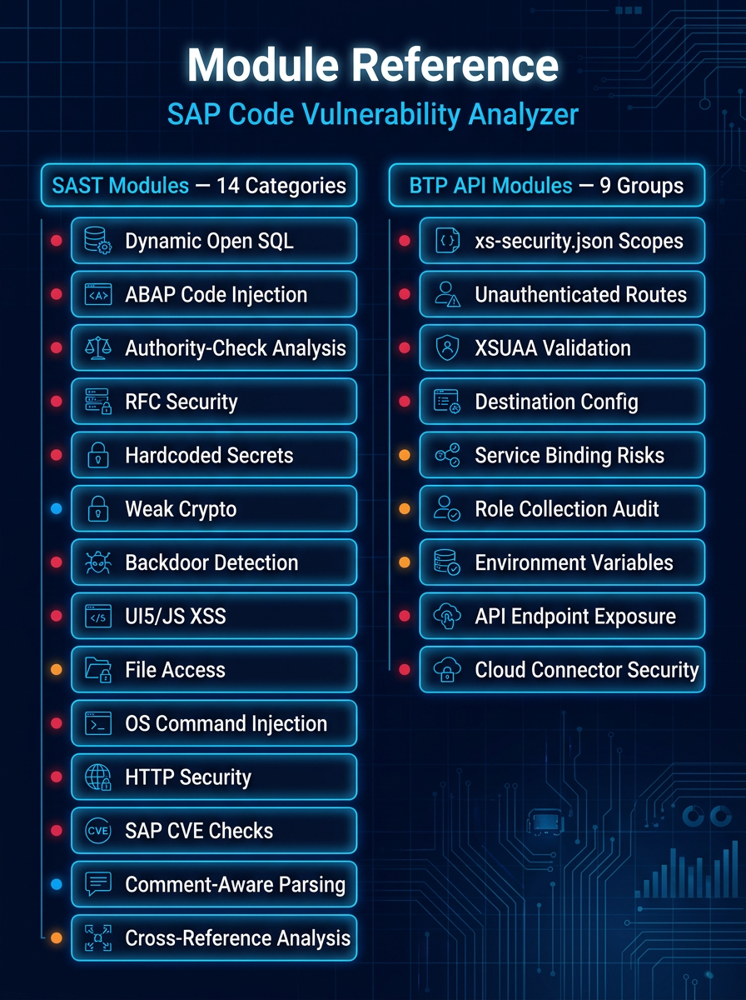
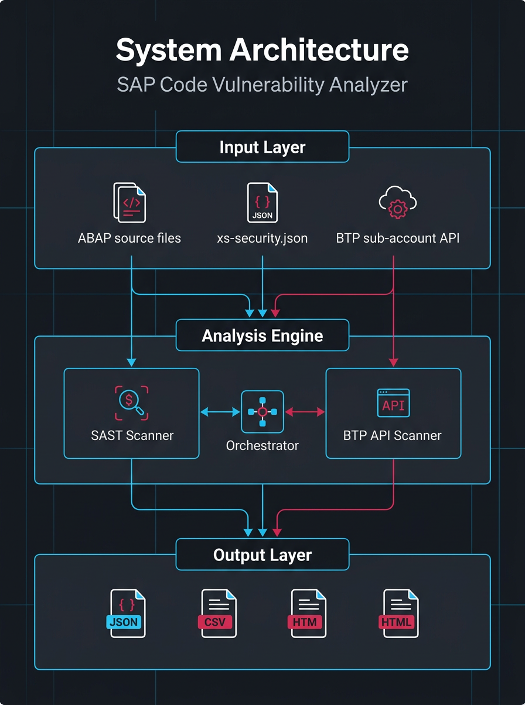
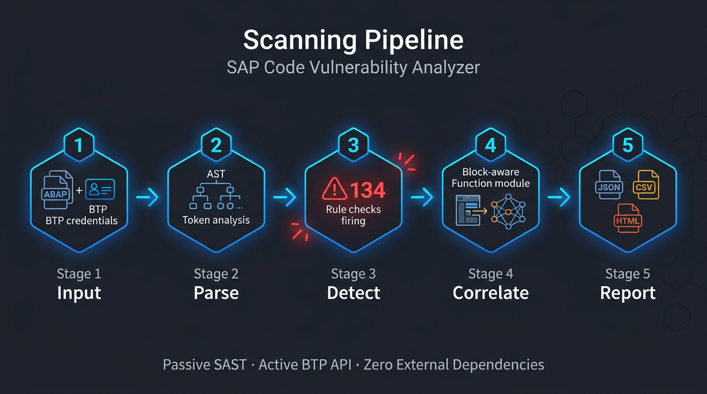
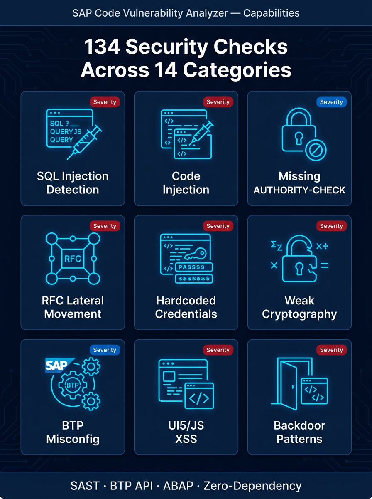

01Overview
SAP ABAP Vulnerability Analyzer is a dual-mode security scanner purpose-built for the SAP stack that generic SAST tools consistently miss. It performs passive static analysis of ABAP, CDS, UI5/JavaScript and SAP BTP configuration files, and — when handed XSUAA credentials — actively audits a live SAP BTP sub-account over OAuth 2.0. The entire tool is a single self-contained Python file: SAST mode runs on pure standard library with zero pip installs, and only the live BTP API mode needs the requests package.
Inspired by SAP's in-system Code Vulnerability Analyzer (CVA), it understands ABAP-specific attack surface that off-the-shelf scanners can't parse: dynamic Open SQL (SELECT ... WHERE (variable)), runtime code generation (INSERT REPORT, GENERATE SUBROUTINE POOL), missing AUTHORITY-CHECK in RFC-enabled function modules, RFC lateral-movement via dynamic DESTINATION, and insider-backdoor patterns such as hardcoded SY-UNAME checks or direct writes to USR02/AGR_* authorization tables. It correctly handles ABAP comment syntax, case-insensitive keywords and statement terminators so it doesn't drown teams in parse-noise.
Across the two modes it ships 134 security checks — 104 SAST regex rules (89 ABAP/CDS, 8 BTP config, 7 UI5/JS) plus 30 live BTP API checks — every one mapped to a CWE and an OWASP Top 10 (2021) category. An optional intra-procedural data-flow (taint) engine confirms findings fed by real external input, suppresses literal/sanitized false positives, and prints the source-to-sink path (also emitted as SARIF codeFlows for GitHub code scanning).
It is built for SAP security teams, ABAP developers and compliance auditors who need CI-gateable results: a weighted A-F security grade, scan profiles, inline #NOSEC and baseline suppression, exit code 1 on CRITICAL/HIGH, and four output formats (console, JSON, HTML, SARIF 2.1.0). A 90-test pytest suite runs on a Python 3.10-3.13 CI matrix with no SAP system or network required.
02Key Capabilities
Dual-mode scanning
Runs passive SAST over source and config files, active OAuth 2.0 API auditing of a live BTP sub-account, or both simultaneously into one unified report.
ABAP-aware parsing
Strips ABAP comment syntax (* full-line and " inline), handles case-insensitive keywords and . terminators, and does block-aware analysis of whole FUNCTION/METHOD blocks so a comment-only AUTHORITY-CHECK never fools it.
Data-flow (taint) analysis
Optional --data-flow engine tracks tainted / sanitized / literal variables per procedure to confirm real injection findings, drop false positives, and print the source-to-sink path.
Insider-backdoor detection
A dedicated malicious-code category flags hardcoded SY-UNAME/SY-MANDT logic bombs, direct DML writes to USR02/AGR_* tables, and programmatic SAP_ALL/SAP_NEW grants.
SAP dependency CVE checking
Cross-references package versions against known SAP CVEs including RECON (CVE-2020-6287), HTTP request smuggling (CVE-2022-22536) and CommonCryptoLib privilege escalation.
BTP configuration analysis
Deeply inspects xs-security.json, xs-app.json, mta.yaml and CDS annotations for wildcard scope grants, unauthenticated routes, disabled token validation and CORS wildcards.
Zero-dependency single file
The whole scanner is one ~3,400-line Python file that runs SAST mode on pure stdlib — clone or curl one file and go, no install step.
SARIF 2.1.0 + GitHub code scanning
Exports SARIF with per-rule security-severity scores, CWE helpUris, an OWASP taxonomies block and codeFlows so findings render inline on pull requests.
OWASP + CWE mapping
Every rule maps to a CWE identifier and an OWASP Top 10 (2021) category, with per-OWASP breakdowns in console, JSON and SARIF.
Security grade (A-F)
A weighted score (CRITICAL 10 / HIGH 5 / MEDIUM 2 / LOW 1) summarises posture at a glance in the console header, JSON and an HTML grade card.
Scan profiles & rule selection
--profile full|critical-high|quick plus --disable / --enable-only by rule ID or category prefix, and --list-rules to preview the active catalogue for fast PR gates vs deep audits.
False-positive management
Inline #NOSEC suppression comments and a line-number-independent baseline file let teams onboard the scanner onto existing code and fail only on NEW findings.

03Architecture
Everything lives in one self-contained Python file, abap_scanner.py. Categorised module-level rule dictionaries feed two scanner engines that share a common reporting mixin. The passive AbapSastScanner walks a target tree, dispatches each file by extension, runs a line-by-line regex pass and a state-carrying block pass, then optionally refines results through a taint analyzer; the active AbapBtpScanner authenticates to SAP BTP via XSUAA OAuth 2.0 and evaluates live API responses. Both funnel Finding objects through a RuleSelector (profiles/toggles) and _ReportMixin, which renders unified console, JSON, HTML and SARIF output.


04Project Structure
abap_scanner.pyThe entire scanner — rules, both engines, taint analyzer, rule selector, reporting and CLI in one ~3,400-line stdlib file (v1.9.0).tests/90-test pytest suite covering the engine, block scanner, BTP evaluators, reporting, profiles, grade, OWASP, taint and CVA-parity — no SAP system or network needed.tests/samples/Intentionally vulnerable ABAP/UI5 fixtures (vulnerable_abap.abap 46 findings, backdoor, taint_flow, CVA-parity) used as regression locks..github/workflows/tests.ymlGitHub Actions CI running the pytest matrix on Python 3.10, 3.11, 3.12 and 3.13.CLAUDE.mdArchitecture and contributor guide documenting the rule counts, engines, block-rule contract and BTP check conventions.README.mdFull documentation: dual-mode architecture, every SAST/BTP rule table, CLI reference, report formats and CI/CD integration.banner.svgProject banner rendered at the top of the README.LICENSEMIT License.05Security Controls

06Technology Stack
- Language
- Python 3.10+ (uses modern type-hint syntax)
- Dependencies
- Zero for SAST mode (pure stdlib); requests only for live BTP API mode
- Distribution
- Single self-contained ~3,400-line file (abap_scanner.py)
- Testing
- pytest — 90 tests, no SAP system or network required
- CI
- GitHub Actions matrix on Python 3.10 / 3.11 / 3.12 / 3.13
- Output formats
- Colour console, JSON, self-contained HTML (Catppuccin dark theme), SARIF 2.1.0
- Auth
- SAP BTP XSUAA OAuth 2.0 client-credentials flow with token refresh
- License
- MIT
07Quick Start
$ git clone https://github.com/Krishcalin/SAP-Code-Vulnerability-Analyzer.git && cd SAP-Code-Vulnerability-Analyzer && python abap_scanner.py --version $ python abap_scanner.py /path/to/abap/project --severity HIGH --verbose $ python abap_scanner.py /path/to/project --json report.json --html report.html --sarif report.sarif $ python abap_scanner.py ./src --data-flow --profile critical-high $ python abap_scanner.py --btp-url https://subaccount.authentication.eu10.hana.ondemand.com --client-id <id> --client-secret <secret> $ PYTHONPATH=. python -m pytest tests/ -q
08Compliance & Frameworks
Explore SAP ABAP Vulnerability Analyzer
Full source, documentation, and deployment guides live on GitHub.